library(sf)
library(tidyverse)
grocStores<-st_read("data/denverGrocery.shp",quiet=TRUE)
neighborhoods<-st_read("data/statistical_neighborhoods.shp",quiet=TRUE)
ggplot()+
geom_sf(data=neighborhoods) +
geom_sf(data=grocStores,aes(color=STORE_TYPE)) +
theme_minimal() +
labs(x="Longitude",y="Latitude",color="Store Type",title="Food Stores in Denver")Environmental Data Analysis and Visualization
The Data Goes On and On (and On and On)…
Warm-up exercise
Download the denverData.zip file and extract the files into your working directory.
Load in the denverGrocery and statistical_neighborhoods shapefile as
sfobjectsPlot these using
geom_sfand color the stores according to type
Warm-up exercise
Warm-up exercise
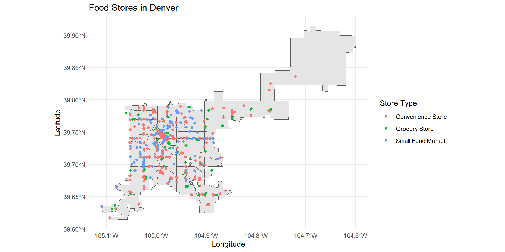
Dataset of the day
Massachusetts Community Health Data

Visualization critique
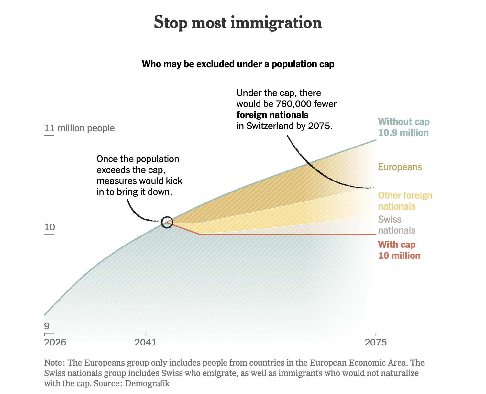
NY Times
Visualization critique
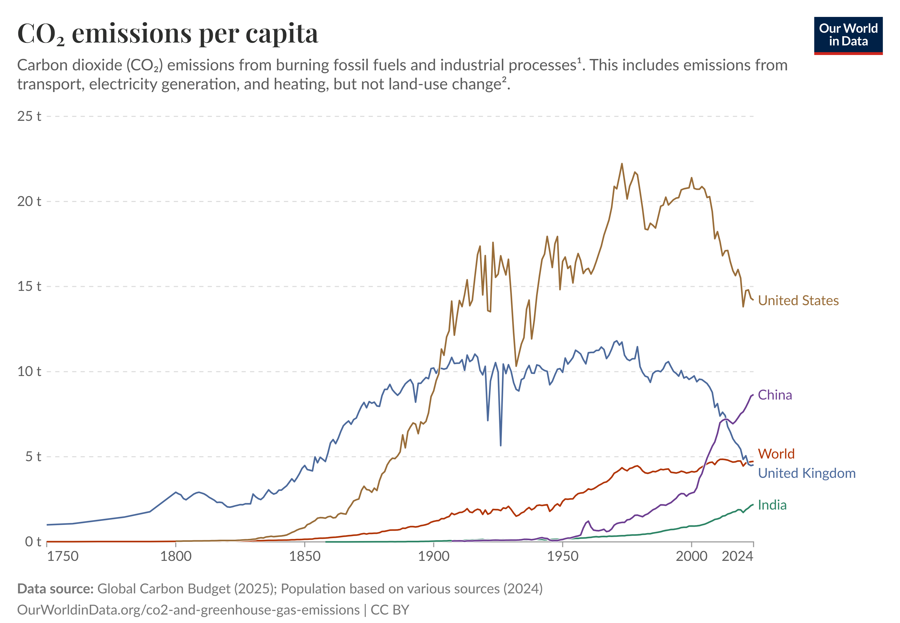
Our World In Data
Visualization critique
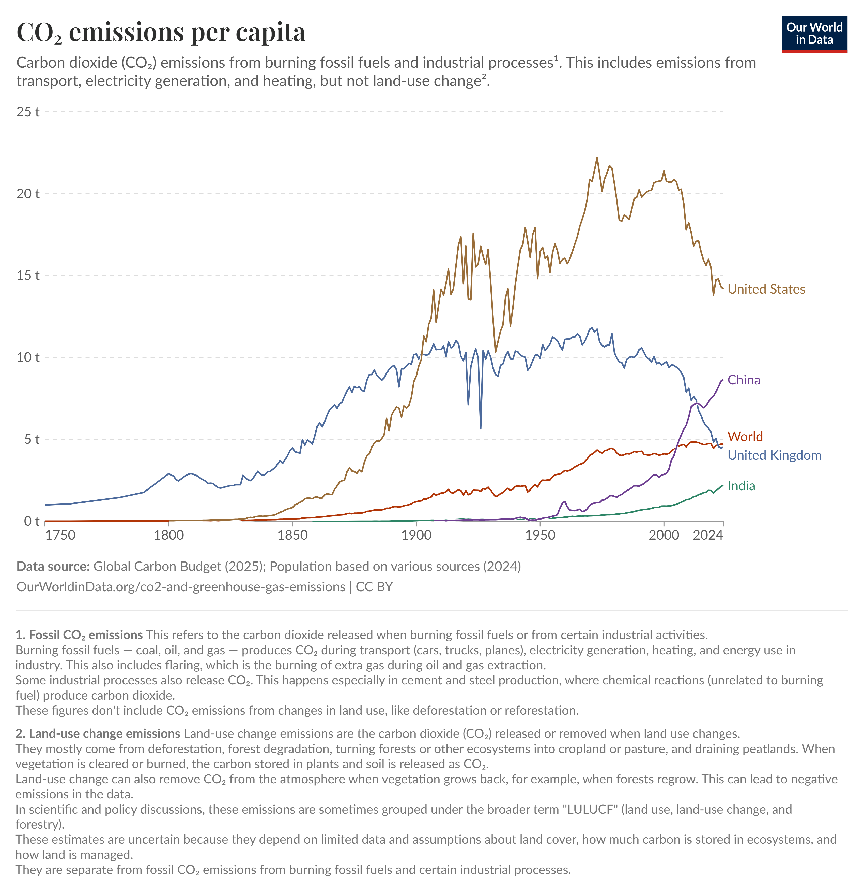
Our World In Data
Visualization critique
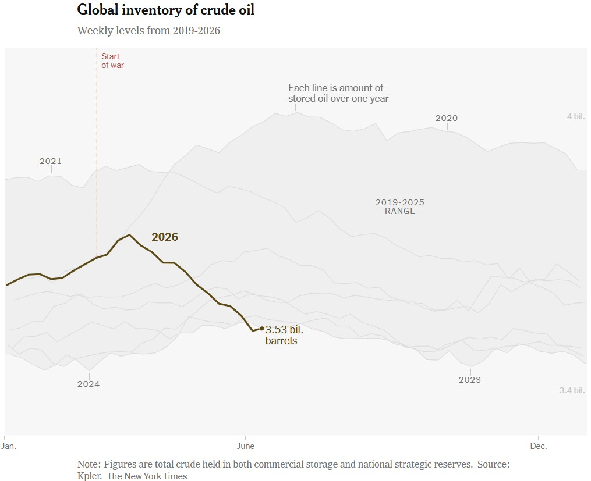
NY Times
Raster data
Rasters are used to represent spatial information that has a continuous distribution.

datacarpentry.org
What kind of data comes as a raster?

Satellite imagery
Climate model outputs
Oceanographic data
Elevation models

Raster algebra
Raster cells contain values that can be combined with cell values of other rasters at the same locations to produce a new raster
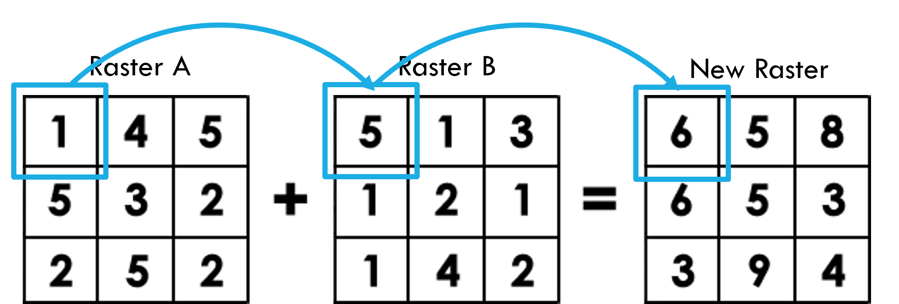
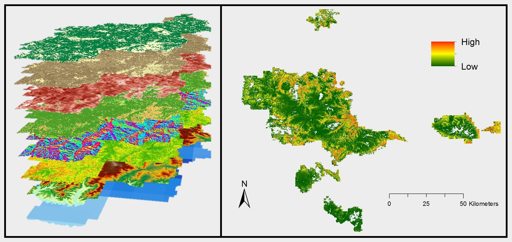
Raster data in R
Faster and easier than earlier raster package
Extends to ggplot2 and dplyr with the tidyterra package
Raster data with terra
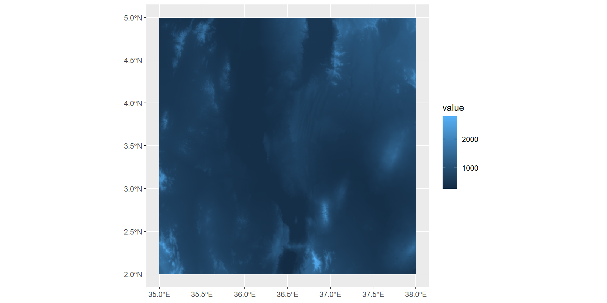
Raster data with terra
library(scales)
rescaledElev<-rescale(c(min(values(turkana)),360,361,max(values(turkana))),to=c(0,1))
ggplot()+
geom_spatraster(data=turkana) +
scale_fill_gradientn(colors=c("cadetblue","skyblue","beige","tan","tan4"),values=rescaledElev)+
theme_minimal() +
labs(fill="Elevation (m)") +
annotate("text", x = 36, y = 3.75, label = "Lake\nTurkana") Raster data with terra
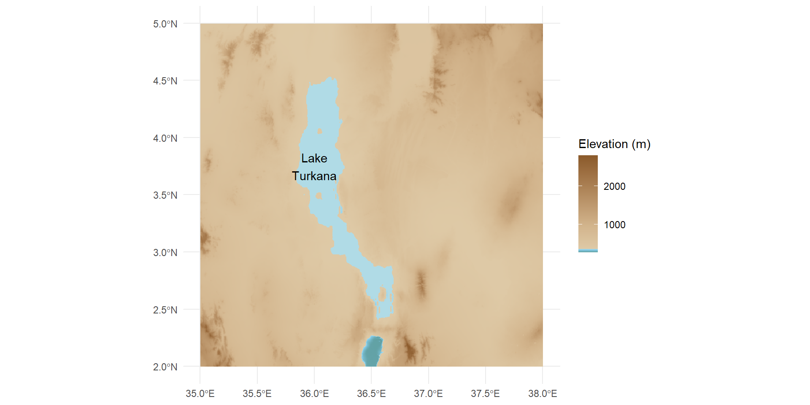
Basemaps
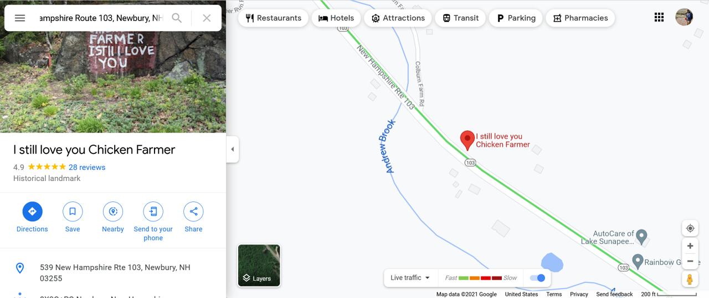
Google Maps
Basemaps
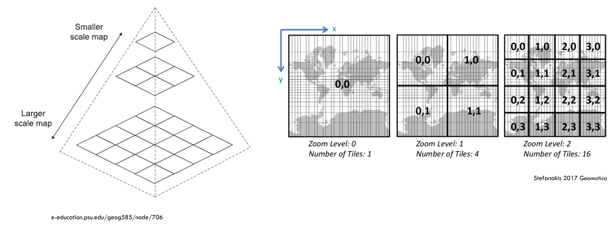
Basemaps with maptiles
Basemaps with maptiles
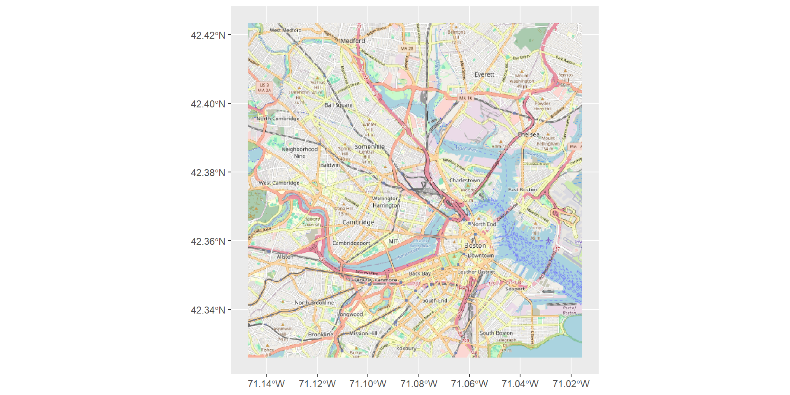
Basemaps with maptiles
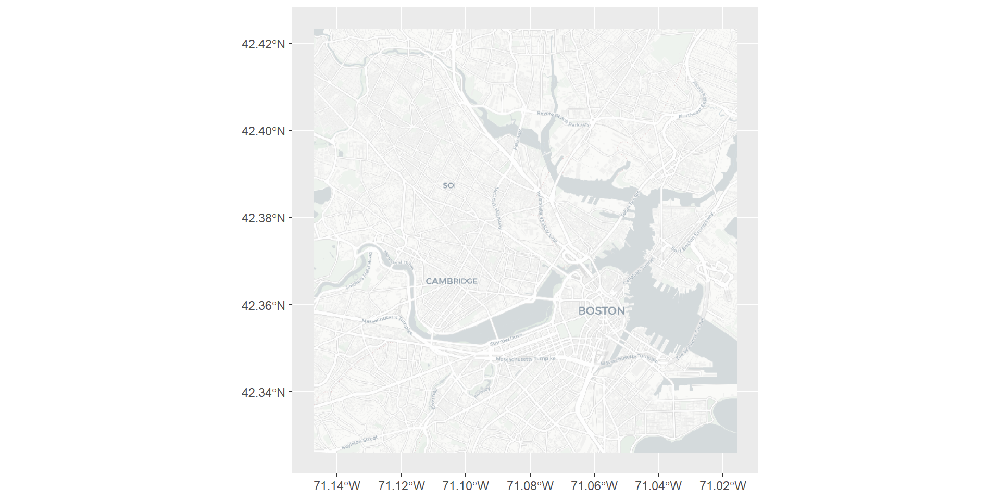
Basemaps with maptiles
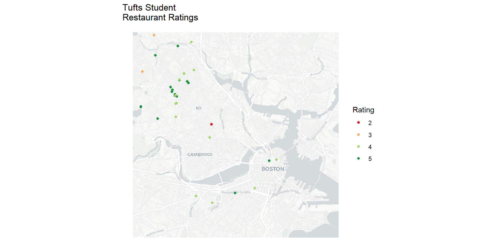
More spatial visualization packages
Binned plots
Leaflet
Rayshader
Binned plots with statebins
# A tibble: 50 × 5
State Operational `Under construction` Announced `Total Data Centers`
<chr> <dbl> <dbl> <dbl> <dbl>
1 Texas 212 140 610 962
2 Virginia 320 136 498 954
3 Georgia 62 56 340 458
4 Pennsylvania 37 11 209 257
5 Arizona 83 35 136 254
6 Ohio 101 51 98 250
7 Illinois 78 19 153 250
8 California 166 6 40 212
9 Utah 29 10 117 156
10 Oregon 97 14 33 144
# ℹ 40 more rowsBinned plots with statebins
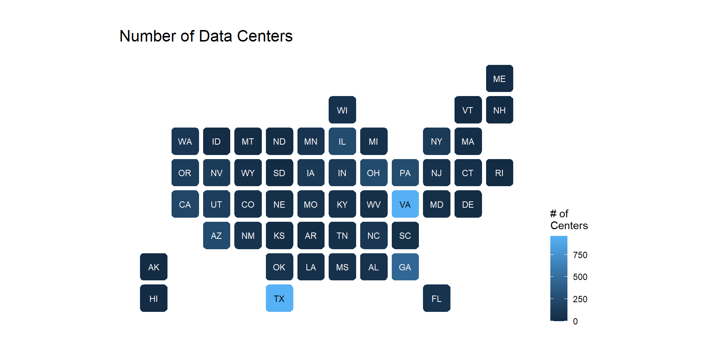
Interactive maps with Leaflet
Interactive maps with Leaflet
3D renderings with rayshader
turkanaMat<-raster_to_matrix(turkana,verbose=FALSE)
turkanaMat %>%
sphere_shade(texture = "desert") %>%
add_water(detect_water(turkanaMat), color = "desert") %>%
add_shadow(ray_shade(turkanaMat, zscale = 100), 0.5) %>%
add_shadow(ambient_shade(turkanaMat), 0) %>%
plot_3d(turkanaMat, zscale = 100, fov = 0, theta = 135, zoom = 0.75, phi = 45, windowsize = c(1000, 800))
Sys.sleep(0.2)
render_snapshot()3D renderings with rayshader
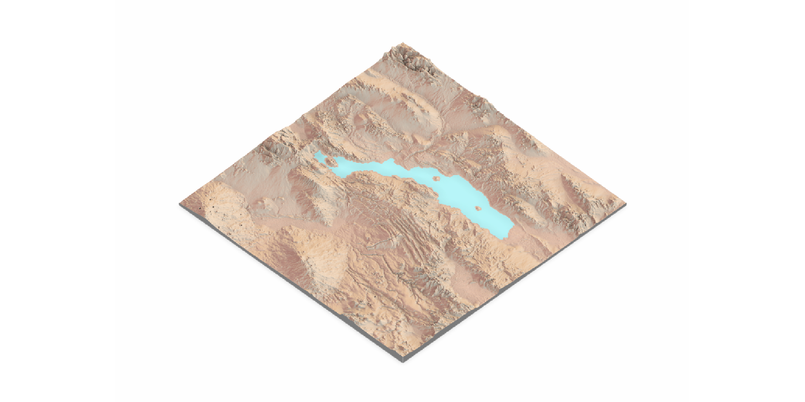
ThuRsday night!
It never ends! Raster data in R
Even more color gradients
Mixing and matching spatial data